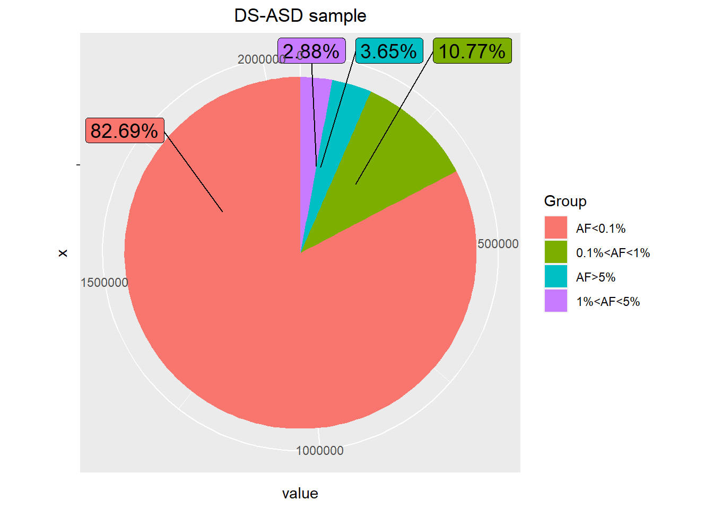
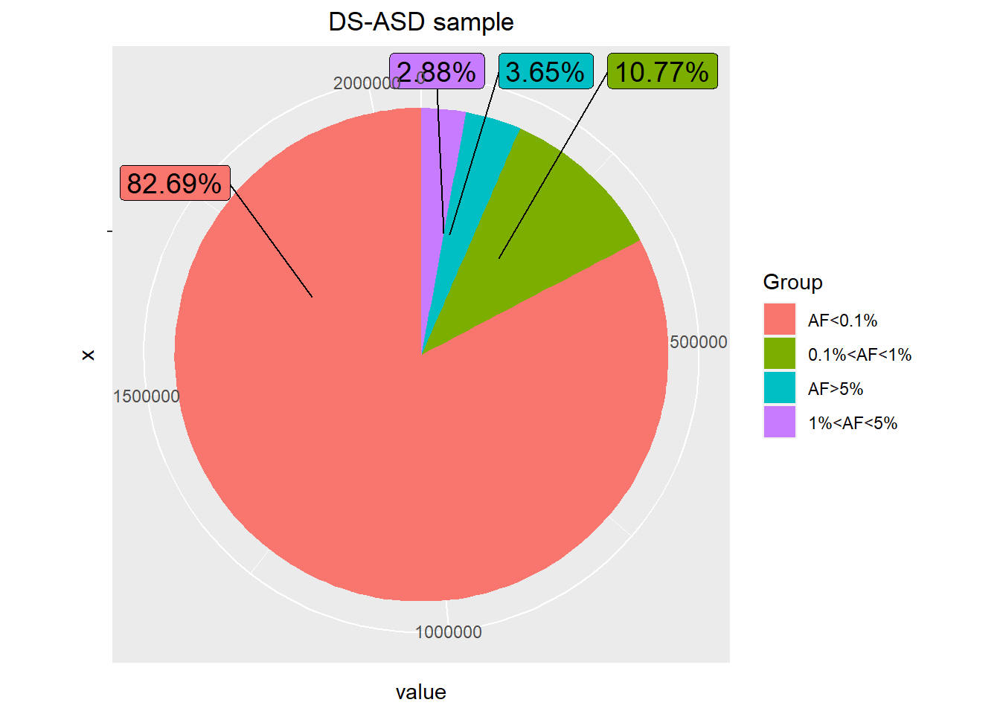

ASD_dbGaP
Four cohort studies
| Group | No.subject | No.var called |
|---|---|---|
| DS-ASD | 10008 | 3452056 (locus with observed alleles) |
| GRU | 2509 | |
| DS-AOND-MDS | 162 | |
| HMB-MDS | 93 | |
| Total | 12772 |
DS-ASD sample
Sample data has 10008 individuals
old sample vs DS-ASD sample
sample decomposition by AF
## # A tibble: 10 x 3
## cutoff group counts
## <chr> <chr> <dbl>
## 1 All old 730052
## 2 AF<0.1% old 464077
## 3 0.1%<AF<1% old 52143
## 4 1%<AF<5% old 11145
## 5 AF>5% old 15379
## 6 All DS-ASD 3451246
## 7 AF<0.1% DS-ASD 1706806
## 8 0.1%<AF<1% DS-ASD 222402
## 9 1%<AF<5% DS-ASD 59489
## 10 AF>5% DS-ASD 75381 

several top genes
## No.case No.control
## DS.ASD CYFIP1 179 198
## DS.ASD EP400 1082 1881
## DS.ASD FBN1 195 234
## DS.ASD SRCAP 339 458
## DS.ASD DYNC1H1 80 124
## DS.ASD ABCA2 226 246
## DS.ASD DOCK4 503 516
## DS.ASD CACNA1D 124 187
## DS.ASD CHD8 136 326
## DS.ASD TRIP12 33 34
## old.sample CYFIP1 138 147
## old.sample EP400 51 48
## old.sample FBN1 271 227
## old.sample SRCAP 182 148
## old.sample DYNC1H1 45 45
## old.sample ABCA2 16 3
## old.sample DOCK4 325 340
## old.sample CACNA1D 131 101
## old.sample CHD8 62 52
## old.sample TRIP12 26 19
Gene CYFIP1
All.Anno.rare.var%>%filter(Gene=="CYFIP1", ID=="15:22963816-22963816_A_G")## # A tibble: 1 x 11
## ID Gene No.case No.contr Polyphen2.HDIV.~ SIFT.score CADD.raw
## <fct> <fct> <int> <int> <fct> <fct> <fct>
## 1 15:2~ CYFI~ 8 0 0.998 0.19 3.585
## # ... with 4 more variables: Exon.Brain.Exp <dbl>, Annotation <fct>,
## # Exon.Exac.Cons <dbl>, ExacAF <dbl>DS.ASD.rare.var%>%filter(Gene=="CYFIP1", ID=="chr15:22963816_22963817_A_G")## # A tibble: 1 x 9
## ID No.case No.contr Gene Annotation ExacAF Polyphen2.HDIV CADD.raw
## <fct> <int> <int> <fct> <fct> <dbl> <fct> <fct>
## 1 chr1~ 6 2 CYFI~ nonsynony~ 0.0002 . .
## # ... with 1 more variable: SIFT.score <fct>| No.case | No.control | ||
|---|---|---|---|
| old | 8 | 0 | |
| DS-ASD | 6 | 2 |
QC for annotations
| item | value.AllVar | value.withoutsyn | value.nonsyn |
|---|---|---|---|
| #{Variants} | 7.300520e+05 | 5.313820e+05 | 3.464720e+05 |
| #{Gene} | 1.562400e+04 | 1.538100e+04 | 1.530900e+04 |
| rate.ca | 5.291810e+03 | 3.206519e+03 | 1.698942e+03 |
| rate.co | 5.300939e+03 | 3.213075e+03 | 1.703369e+03 |
| ratio_valid_value_Polyphen2.HDIV.score | 1.000000e+00 | 1.000000e+00 | 1.000000e+00 |
| ratio_valid_value_SIFT.score | 1.000000e+00 | 1.000000e+00 | 1.000000e+00 |
| ratio_valid_value_CADD.raw | 1.000000e+00 | 1.000000e+00 | 1.000000e+00 |
| ratio_valid_value_Exon.Brain.Exp | 4.545169e-01 | 4.022887e-01 | 5.789876e-01 |
| ratio_valid_value_Annotation | 1.000000e+00 | 1.000000e+00 | 1.000000e+00 |
| ratio_valid_value_Exon.Exac.Cons | 7.188022e-01 | 6.429856e-01 | 9.177076e-01 |
| ratio_valid_value_ExacAF | 7.445812e-01 | 7.305629e-01 | 7.281512e-01 |
| item | value.AllVar | value.withoutsyn | value.nonsyn |
|---|---|---|---|
| #{Variants} | 3.451246e+06 | 1.157408e+06 | 1.108935e+06 |
| #{Gene} | 1.827400e+04 | 1.825300e+04 | 1.824500e+04 |
| rate.ca | 5.143263e+04 | 7.781897e+03 | 7.365552e+03 |
| rate.co | 5.529460e+04 | 8.226857e+03 | 7.777235e+03 |
| ratio_valid_value_Annotation | 5.151873e-01 | 1.000000e+00 | 1.000000e+00 |
| ratio_valid_value_ExacAF | 6.026377e-01 | 6.538861e-01 | 6.565371e-01 |
| ratio_valid_value_Polyphen2.HDIV | 9.153086e-01 | 1.000000e+00 | 1.000000e+00 |
| ratio_valid_value_CADD.raw | 9.153086e-01 | 1.000000e+00 | 1.000000e+00 |
| ratio_valid_value_SIFT.score | 9.153086e-01 | 1.000000e+00 | 1.000000e+00 |
Gene set analysis
N1=2403; N0=2403
DS.ASD.sample[DS.ASD.sample =="."] <- NA
DS.ASD.sample$ExacAF[is.na(DS.ASD.sample$ExacAF)]=0 # set AF of NA to zero
Anno.Data=DS.ASD.sample[which(DS.ASD.sample$ExacAF<0.05 & DS.ASD.sample$Annotation!="synonymous SNV"),] # use AF cutoff and exclude synonumous SNV
var.data=as_tibble(data.frame(ID=Anno.Data$ID, No.case=Anno.Data$No.case, No.contr=Anno.Data$No.contr))
LoF.def=c("stopgain", "frameshift substitution", "splicing", "stoploss")
LoF.var=as.character(Anno.Data$ID[which(Anno.Data$Annotation %in% LoF.def==T)]) Simple burden test
## Warning: `src_sqlite()` is deprecated as of dplyr 1.0.0.
## Please use `tbl()` directly with a database connection
## This warning is displayed once every 8 hours.
## Call `lifecycle::last_warnings()` to see where this warning was generated.##
## Attaching package: 'kableExtra'## The following object is masked from 'package:dplyr':
##
## group_rows| OR | p.value | rate.ca | rate.co | |
|---|---|---|---|---|
| cate1 | 0.7709677 | 1 | 0.8951311 | 1.161049 |
| cate2 | 0.7211256 | 1 | 3.7856846 | 5.249688 |
| cate3 | 0.8416703 | 1 | 8.0944653 | 9.617145 |
| cate4 | 0.8854299 | 1 | 20.2517686 | 22.872243 |
| cate5 | 0.9326654 | 1 | 6.2367873 | 6.687058 |
| cate6 | 0.8429837 | 1 | 1.0299625 | 1.221806 |
| cateS | 0.8387536 | 1 | 5.6346234 | 6.717853 |
| TADAq<5% | 0.7734742 | 1 | 2.7424053 | 3.545568 |
| TADAq<20% | 0.8283586 | 1 | 7.4490221 | 8.992509 |
| TADAq<30% | 0.7921760 | 1 | 11.8651685 | 14.977944 |
| TADAq<40% | 0.8030515 | 1 | 18.8805660 | 23.511028 |
| TADAq<50% | 0.8246703 | 1 | 30.0083229 | 36.388265 |
| TADAq>90% | 0.8519021 | 1 | 773.1598002 | 907.568872 |
| ID gene | 0.9093362 | 1 | 12.6217228 | 13.880150 |
| High conf | 0.7316017 | 1 | 5.6966292 | 7.786517 |
| Mod conf | 0.8271188 | 1 | 18.5359967 | 22.410320 |
| PSD | 0.8428174 | 1 | 30.9783604 | 36.755722 |
| FMRP | 0.8319357 | 1 | 65.2721598 | 78.458177 |
| AutismKB | 0.7948590 | 1 | 13.9492301 | 17.549313 |
| constraint gene | 0.7439750 | 1 | 52.2983770 | 70.295880 |
| RVIS | 0.8444988 | 1 | 81.9662921 | 97.059093 |
| Haploinsuff gene | 0.8815135 | 1 | 212.9300874 | 241.550562 |
| SCZ gene | 0.8249196 | 1 | 161.8160633 | 196.159800 |
| Olfac.gene | 0.8491957 | 1 | 34.9958385 | 41.210570 |
| 67SCZriskgene | NA | NA | NA | NA |
| OR | p.value | No.ca | No.co | |
|---|---|---|---|---|
| cate1 | 0.2857143 | 0.9804688 | 2 | 7 |
| cate2 | 0.2706245 | 1.0000000 | 351 | 1297 |
| cate3 | 0.8475000 | 0.9887491 | 339 | 400 |
| cate4 | 0.6938202 | 1.0000000 | 494 | 712 |
| cate5 | 0.7238095 | 0.9872584 | 76 | 105 |
| cate6 | 1.1428571 | 0.5000000 | 8 | 7 |
| cateS | 0.7815315 | 0.9997572 | 347 | 444 |
| TADAq<5% | 0.3663366 | 1.0000000 | 37 | 101 |
| TADAq<20% | 0.4980315 | 1.0000000 | 253 | 508 |
| TADAq<30% | 0.5644372 | 1.0000000 | 346 | 613 |
| TADAq<40% | 0.6133225 | 1.0000000 | 755 | 1231 |
| TADAq<50% | 0.6635007 | 1.0000000 | 978 | 1474 |
| TADAq>90% | 0.7490092 | 1.0000000 | 24569 | 32802 |
| ID gene | 0.5024272 | 1.0000000 | 207 | 412 |
| High conf | 0.2818387 | 1.0000000 | 374 | 1327 |
| Mod conf | 0.6680851 | 1.0000000 | 628 | 940 |
| PSD | 0.5138785 | 1.0000000 | 685 | 1333 |
| FMRP | 0.5527370 | 1.0000000 | 828 | 1498 |
| AutismKB | 0.6336032 | 1.0000000 | 313 | 494 |
| constraint gene | 0.3537683 | 1.0000000 | 629 | 1778 |
| RVIS | 0.6853180 | 1.0000000 | 1433 | 2091 |
| Haploinsuff gene | 0.5026760 | 1.0000000 | 2442 | 4858 |
| SCZ gene | 0.6490760 | 1.0000000 | 3161 | 4870 |
| Olfac.gene | 0.7984705 | 1.0000000 | 1775 | 2223 |
| 67SCZriskgene | NA | NA | NA | NA |
## Loading required package: viridisLite##
## Attaching package: 'viridis'## The following object is masked from 'package:scales':
##
## viridis_pal## Loading required package: magrittr##
## Attaching package: 'magrittr'## The following object is masked from 'package:purrr':
##
## set_names## The following object is masked from 'package:tidyr':
##
## extract## The following object is masked from 'package:rlang':
##
## set_namesConstraint genes
Cons: Simple burden analysis
## `stat_bin()` using `bins = 30`. Pick better value with `binwidth`.
| OR | p.value | No.ca | No.co |
|---|---|---|---|
| 0.2669903 | 1 | 55 | 206 |
| 0.3651399 | 1 | 574 | 1572 |
| 0.7118617 | 1 | 13215 | 18564 |
| 0.6773831 | 1 | 8428 | 12442 |
| 0.6890022 | 1 | 14190 | 20595 |
| 0.8186472 | 1 | 43656 | 53327 |
| 0.7567757 | 1 | 22645 | 29923 |
| 0.7035852 | 1 | 22431 | 31881 |
 ### Apply mirage to constraint gene set
### Apply mirage to constraint gene set
Here it is.
This R Markdown site was created with workflowr